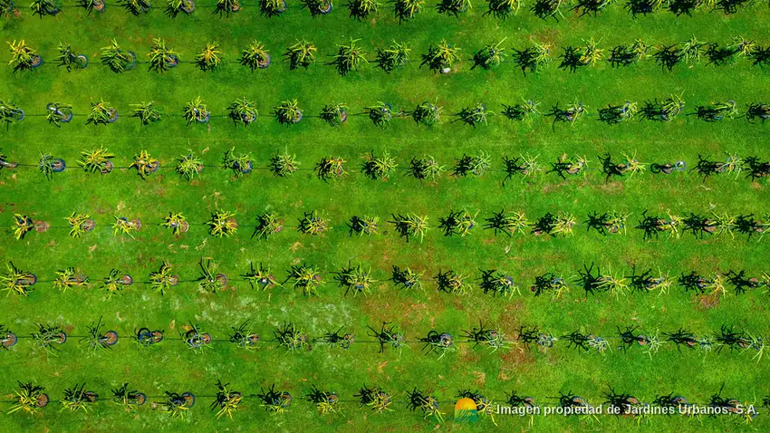
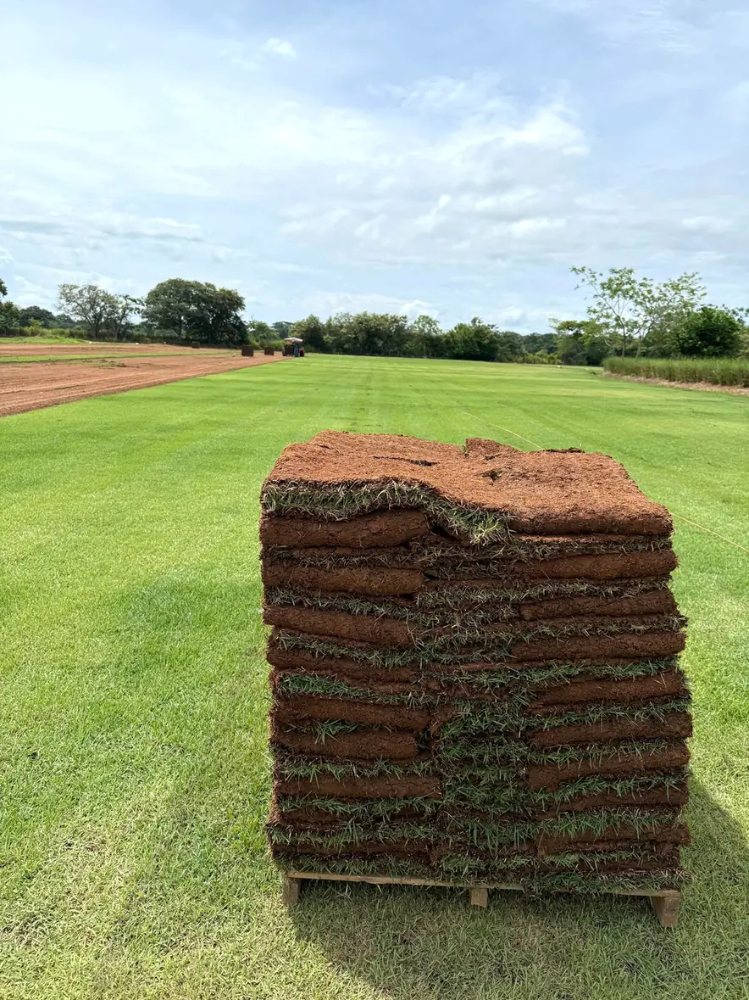
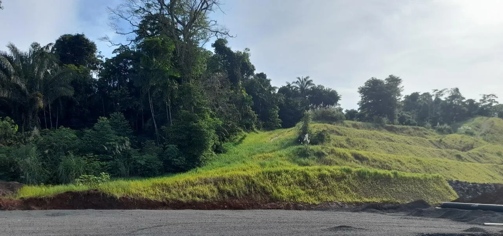
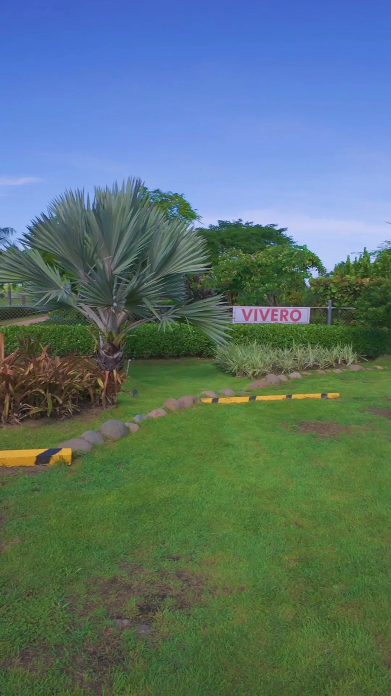
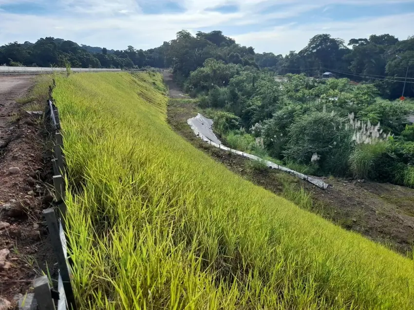
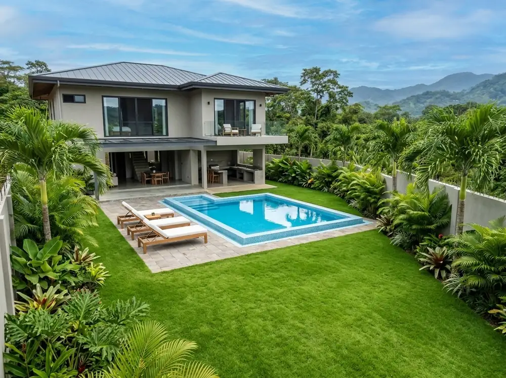
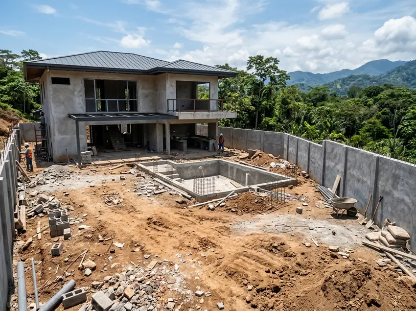
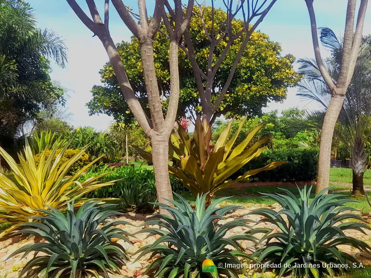
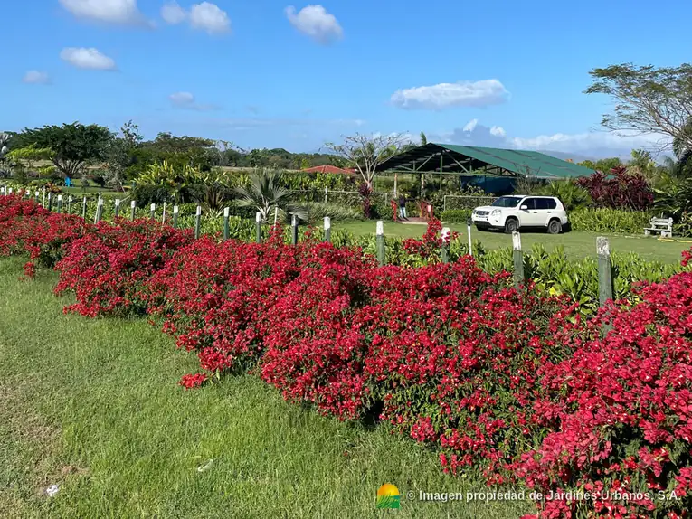

Venta de gramas naturales, hidrosiembra y vivero en Panamá
Del cultivo en nuestras fincas a tu proyecto en todo Panamá. Más de 25 años cultivando grama certificada en rollos (Zoysia Toro, Zoysia Japónica y San Agustín), palmas ornamentales y estabilización técnica mecanizada de taludes.
Resultados reales en suelos panameños
Arrastra el deslizador central interactivo para comparar el estado inicial frente a la cobertura botánica establecida.


Talud vial: control de erosión con hidrosiembra
De arcilla expuesta sujeta a deslaves por lluvias intensas en Panamá a una manta radicular continua con 98% de reducción de escorrentía en 5 semanas.


Residencia: de patio compactado a césped esmeralda
Suelo desnudo compactado tras construcción transformado en tapete de Zoysia Toro resistente al pisoteo y juego familiar en solo 2 semanas.
Producción real en nuestras fincas
Soluciones verdes para cada proyecto
Combinamos la escala de nuestras fincas agrícolas en Coclé con ingeniería de paisaje y maquinaria pesada para servir proyectos residenciales, turísticos y de obra pública.
Gramas naturales de finca
Cosecha fresca mecanizada en rollos sobre tarimas. Producción certificada de Zoysia Toro (alto tráfico y canchas), Zoysia Japónica (resistencia salina para casas de playa) y San Agustín (tolerancia a sombra parcial).
Hidrosiembra y control de erosión
Estabilización de taludes de hasta 60° (1:1) en proyectos viales, urbanizaciones y canteras con camión hidrosembrador propio.
Palmas ornamentales y árboles en cepellón
Palma Real, Bismarckia azul plateada, Roebelenii (Phoenix roebelenii) y árboles nativos preparados con poda radicular para trasplante inmediato.
Cultivos especiales: 7 ha de pitahaya
Plantación tecnificada en Río Grande, Coclé. Venta de esquejes certificados y fruta fresca con soporte agronómico para nuevos inversionistas agropecuarios.
Calculadora de metros cuadrados (m²)
Calcula cuántos m² necesitas según tu proyecto y el sol que recibe el terreno. Sumamos 5% extra para cortes y bordes y te enviamos a WhatsApp con la cotización lista.
Especies aclimatadas de finca y vivero
Explora nuestras variedades cultivadas en Río Grande, Coclé. Filtra por requerimiento de sol, tolerancia a salinidad marina o resistencia al tránsito continuo.
Soluciones para constructoras, obras viales y pliegos MOP
Capacidad industrial para estabilización mecánica de taludes, campos deportivos y suministros a gran escala para desarrolladores y contratistas en Panamá.
Maquinaria hidrosembradora propia operando en talud vial con mezcla de fibra vegetal certificada, semillas tropicalizadas y adherente orgánico.
Especificación para planos y BoQ
Suministro y aplicación mecanizada de Hidrosiembra para estabilización y control de erosión en taludes, ejecutada con equipo hidrosembrador de agitación hidráulica, utilizando mulch de fibra vegetal certificada, semillas de gramíneas tropicalizadas de rápido arraigo, adherente orgánico fijador y fertilizante de liberación controlada provisto por Jardines Urbanos, S.A. (+507 6539-0949).
Pega este texto técnico directamente en notas generales de AutoCAD, Revit o especificaciones de licitación.
Infraestructura propia de cosecha y despacho
Garantizamos frescura botánica y corte limpio el mismo día de la entrega a cualquier provincia de la República de Panamá.
Contáctanos o solicita tu cotización
Atención personalizada para propietarios de viviendas, administradores de PH y directores de proyectos de infraestructura.
Envíanos tu consulta
Directorio oficial
¿Necesitas atención inmediata?
Chatea directamente con nuestro asesor de guardia para verificar disponibilidad en finca.
Iniciar chat por WhatsAppNosotros: más de 25 años vistiendo de verde a Panamá
Jardines Urbanos, S.A. nació en 1999 como una empresa familiar panameña con raíces profundas en Río Grande, Coclé. Nuestro mayor activo es nuestra gente: agrónomos, operadores y colaboradores de campo que cultivan cada metro de grama y cada ejemplar del vivero con dedicación artesanal.
De nuestra familia y colaboradores en Coclé a todo el país
Durante más de dos décadas y media hemos crecido junto al desarrollo urbano, turístico y vial de Panamá. Desde nuestras fincas en Río Grande, Coclé, combinamos la calidez de una empresa atendida directamente por sus fundadores con tecnología agrícola de punta.
Cada rollo de grama Zoysia Toro, Zoysia Japónica y San Agustín, cada palma y cada proyecto de hidrosiembra lleva el sello de compromiso de decenas de familias coclesanas que trabajan la tierra día a día.



